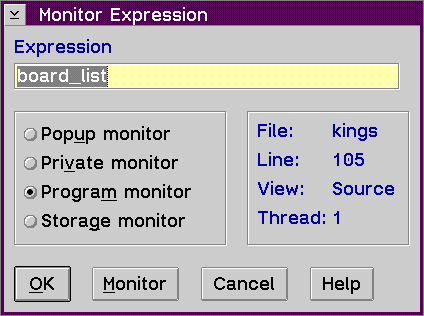

Displays the Monitor Expression window, which allows you to monitor expressions or variables and add them to various monitor windows.
Use the Monitor Expression window to type the name of the expression you want to monitor. This window lists the following contextual information:
To specify an expression to be monitored:
Note: The expression displays as specified in the Monitor Properties window. To change the default location, select Monitor properties from the Debugger settings choice from the Options menu in the source windows or the Debug Session Control window.